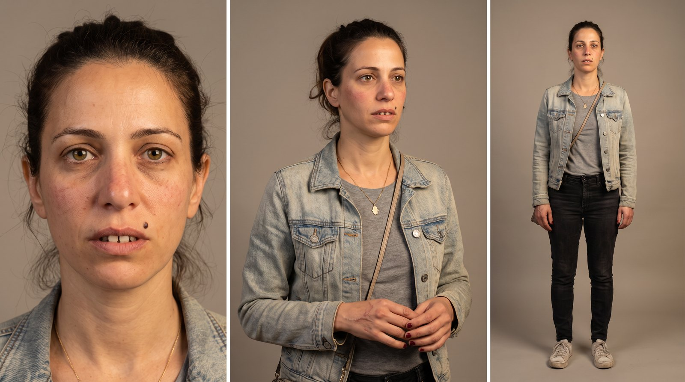
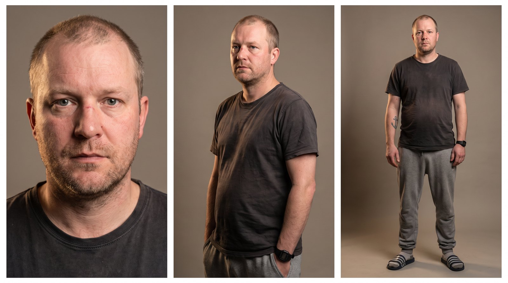
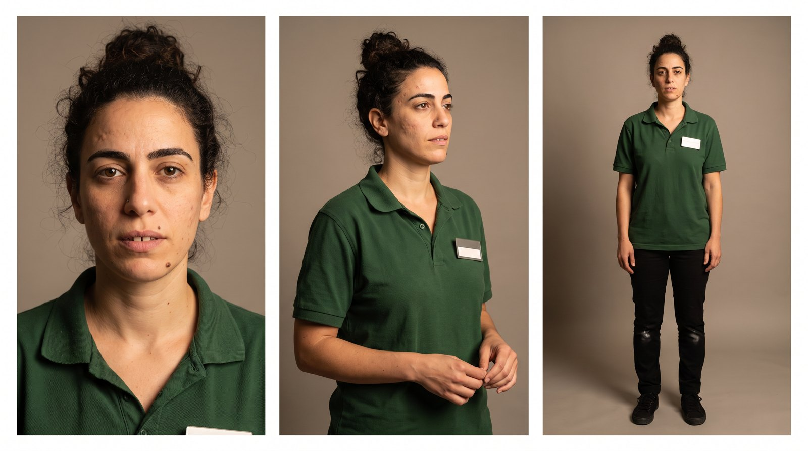
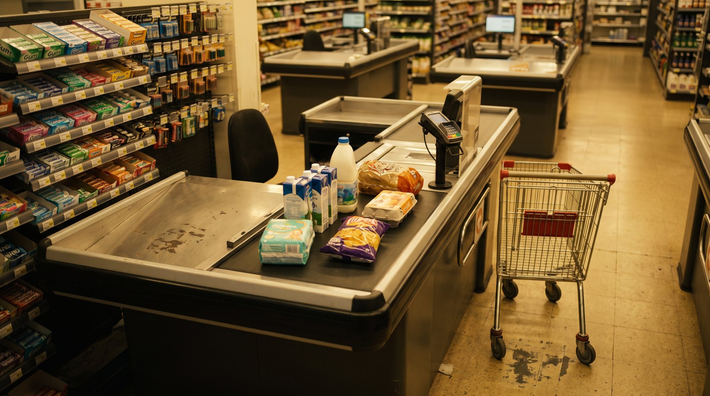
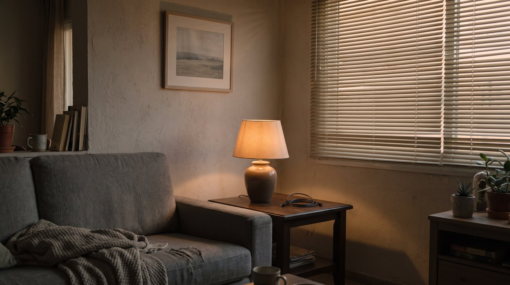
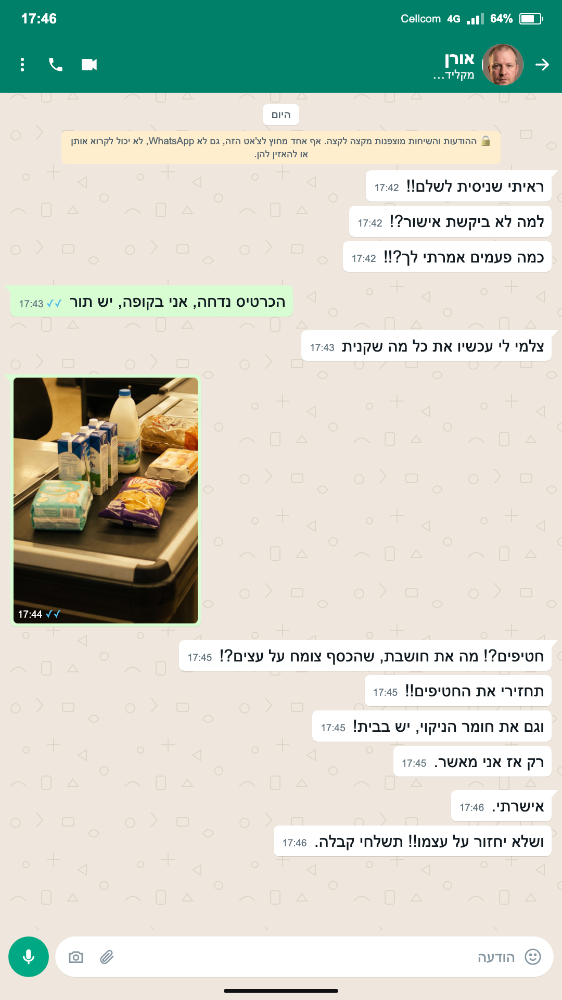
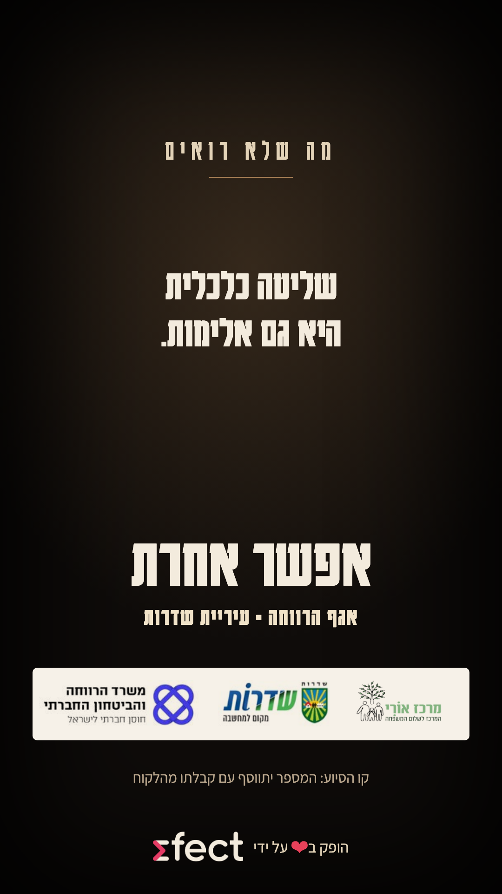

אגף הרווחה · עיריית שדרותקמפיין ליום המאבק באלימות במשפחה
בהפקת
אישה בקופה של הסופר. הכרטיס נדחה. הבעל, רגוע מול הטלפון, מאשר רק אחרי שהיא מצלמת לו מה קנתה ומחזירה מה שהוא לא אישר. הקנייה מסתיימת. ההשפלה נשארת.
כל דמות מוצגת בשלוש זוויות: פנים, שלושה-רבעים וגוף מלא, בלבוש של הסרטון. ככה היא תיראה בכל השוטים.

האישהבת 36, חילונית. ז'קט ג'ינס, חולצה אפורה, תיק קטן. אישה רגילה בקניות לבית.
הבעלבן 40, חילוני. חולצת טי כהה ומכנסי טרנינג, שעון חכם. פנים רגועות.
הקופאיתבת 32. פולו ירוק כהה בלי לוגו, תג שם ריק. מקצועית, לא שיפוטית.
הקופה בסופרקופה מודרנית, מסוף אשראי, עגלה, המוצרים החיוניים על הסרט: חלב, לחם, ביצים, חומר ניקוי, טיטולים, חטיפים. אור חם ולא כחלחל.
הבעל בביתפינת סלון עם ספה אפורה, מנורה חמה, תריס סגור. נעים ורגיל, בלי סממנים דתיים.אותו כרטיס בכל חמשת הסרטונים: שורה שנותנת שם למה שראינו, "אפשר אחרת", הלוגואים וקו הסיוע. המספר והלוגואים הסופיים ייכנסו עם הקבצים שתשלחו.

התכתבות כמו באמת: ההודעות שלו בלבן מימין, התשובה הקצרה שלה בירוק משמאל, רקע וצבעים של אפליקציית ההודעות המוכרת, שם איש קשר ושעות. נבנה בעריכה מעל הצילום בסרטונים 02 ו-04.
"שליטה כלכלית היא גם אלימות." ואז "אפשר אחרת", שלושת הלוגואים וקו הסיוע. התבנית שאושרה (קולנועי); המספר והלוגואים הסופיים לפי הקבצים שיישלחו.לכל שוט: מה רואים, מה שומעים, איך המצלמה מצלמת, מה האור והקומפוזיציה, ומה הצופה אמור להבין ברגע הזה.
כל הטקסטים נבנים בעריכה, בעברית, באזור הבטוח של אינסטגרם. הנוסחים כאן לאישורכם.
ממשק ההודעות (דוגמה, סרטון 02)
חמשת הסרטונים מופקים דרך Efect, בהובלת אוראל לוי: תסריט, בימוי, יצירת הדמויות והסצנות, עריכה, סאונד וטקסטים, עד חמישה סרטונים מוכנים לפרסום.